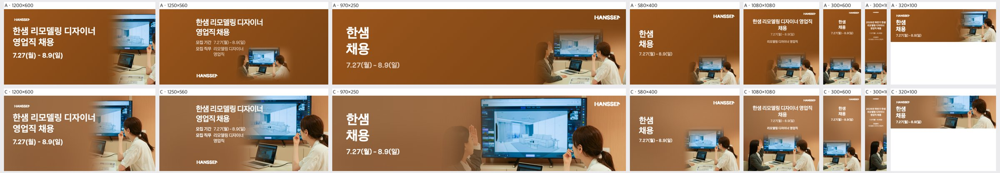
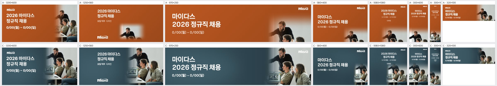
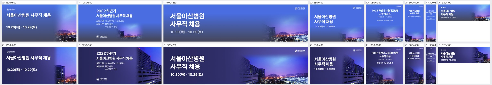
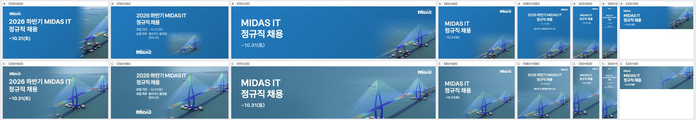
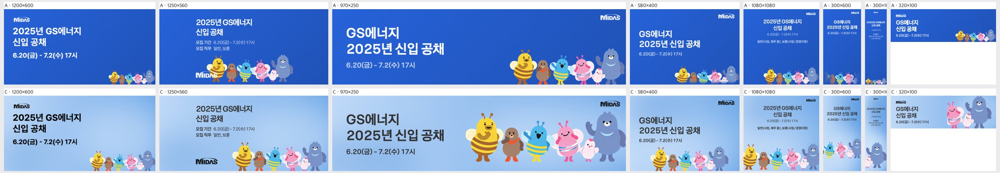
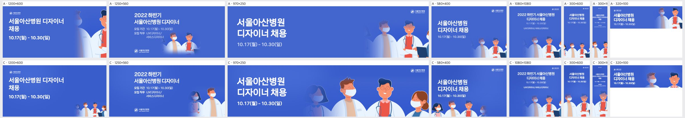

A+AI 검증 루프 — 라운드 11
2026-10-23T03:54:19.537Z · 케이스 15 × 규격 8 · 위 줄 A(규칙) / 아래 줄 C(AI 판단 + 규칙) · 채점 Claude claude-opus-5-5
# 라운드 11 — 2026-10-23 03:54
평균 점수(C, 1~5, Claude 채점): **3.25** · 자동 점수 3.36 · 그림 면적 평균 42% · 비용 $0.768 · 얼굴 잘림 0
| 유형 | 평균 | A 나음 | C 나음 | 같음 |
|---|---|---|---|---|
| 사진 | 3.27 | 0 | 5 | 0 |
| 누끼 | 3.23 | 1 | 4 | 0 |
| 오브젝트·일러스트 | 3.25 | 0 | 5 | 0 |
AI 상자 결과: shrink 54 · free 51 · grow 7 · ok 5 · rule 3
## 문제 집계
- bg:flat 35
- kvWeight:too_small 33
- crop:subject_cut 29
- crop:awkward 20
- text:low_contrast 15
- kvWeight:too_big 5
- text:overlap 3
- crop:face_cut 1
## 케이스별 큰 문제
- **t1014-hanssem**(사진) · C 나음: 1250×560에서 사진 영역이 텍스트 영역까지 침범해 타이틀이 모니터 위에 겹침(텍스트 세이프존을 고려하지 않고 사진을 확대 배치한 판단으로 추정) / 가로형 규격들에서 왼쪽 여성이 잘리거나 얼굴이 페이드에 묻힘(크롭 초점이 오른쪽 인물과 모니터에만 맞춰져 있는 것으로 추정) / 세로형(300×600, 300×1050)과 580×400에서 사진이 작고 글자가 너무 작아 지면이 비어 보임(가로 원본을 세로 지면에 축소 배치한 규칙 기반 레이아웃 그대로 사용)
- **hr-doctor**(사진) · C 나음: 전반적인 회보라 틴트 오버레이로 사진이 탁하고, 짙은 회색 텍스트의 대비가 A(흰 글자+파랑)보다 약하다. 브랜드 컬러 대신 사진 평균색으로 배경을 뽑은 결과로 보인다. / 세로·정사각 규격(1080×1080, 300×600, 300×1050, 580×400)에서 손이 하단·모서리 경계에 잘린다. '머리 보존' 규칙을 따랐지만 실제 피사체(얼굴 없음, 손이 주인공)를 인식하지 못해 크롭 기준점이 잘못 잡힌 것으로 추정된다. / 300×1050의 본문 텍스트가 판독 불가 수준이다. 규격별 텍스트 축약 규칙이 없어, 원문 정보량을 그대로 축소 적용한 탓이다.
- **midas-team-photo**(사진) · C 나음: 580×400에서 사진이 우하단에 작게 고정 배치돼 노트북·남성 일부만 잘려 보임(사진 스케일을 짧은 변 기준으로 고정하고 하단 앵커를 쓴 탓으로 추정) / 1080×1080·300×1050에서 사진이 하단에 몰리고 텍스트가 폭 대비 작아 상단이 비어 보임(정사각·세로형에서 텍스트 스케일 규칙이 보수적임) / 가로형(1200×600·970×250)에서 수염 남성 머리 위 헤드룸이 부족함(상단 정렬 크롭)
- **t1014-asan-photo**(사진) · C 나음: 300×1050에서 글자가 극도로 작음: 가로형 텍스트 블록을 세로 지면에 그대로 축소 배치한 탓으로 추정 / 남색 단색 바탕이 사진의 보라·파랑 하늘보다 어두워 텍스트 쪽이 비어 보이고 경계가 은근히 드러남: 바탕색을 사진 평균색이 아닌 어두운 가장자리에서 뽑은 탓으로 추정 / 1080×1080·300×600에서 사진이 하단에 어둡게만 걸려 키비주얼이 약함: 세로·정사각 크롭에서 하늘보다 지면 쪽을 우선 남긴 탓으로 추정
- **midas-cablebridge**(사진) · C 나음: 가로형 대형 규격(1200×600, 1250×560)에서 헤드라인과 정보 텍스트가 앞쪽 주탑·케이블에 겹친다. 주인공이 41%로 크고 덩어리가 여럿(주탑 2개)인데, 한 덩어리 기준으로 배치해서 생긴 문제로 추정된다. / 세로형·정사각 규격(300×600, 300×1050, 1080×1080)에서 다리가 주탑 조각만 보이게 잘리고 텍스트가 너무 작다. 가로로 긴 피사체를 세로 지면에 같은 스케일 규칙으로 넣은 결과로 보인다. / 970×250, 320×100 같은 납작한 규격에서는 주탑 상단이 잘리거나 형체가 불분명한 조각만 남는다. 주인공 바운딩박스 보존 조건 없이 높이만 꽉 채우도록 확대한 것이 원인으로 추정된다.
- **t1014-dongsuh**(누끼) · C 나음: 1080×1080과 300×1050에서 인물이 하단에 작게 배치되어 지면이 비어 보임. 세로·정사각 규격에서도 인물 크기를 '머리 보존 + 전체 노출' 기준으로 축소한 탓으로 추정됨 / 300×1050의 텍스트가 너무 작아 읽히지 않음. 가로 300px에 직무 상세까지 모두 넣으려다 글자 크기가 하한 아래로 떨어진 것으로 보임 / 970×250에서 인물이 중앙 쪽에 놓여 우측이 빔. 원본 인물의 중심을 기준으로 정렬하면서 우측 정렬 규칙이 적용되지 않은 것으로 추정됨
- **t1014-jeil**(누끼) · C 나음: 키비주얼을 하단 가장자리에 앵커링해 대부분 규격에서 하단 인물과 실험실이 잘림(하단 정렬 + 블리드 규칙 탓으로 추정) / 세로형(300×600, 300×1050)과 320×100에서 키비주얼이 의미 없는 조각으로 크롭되고, 300×1050은 텍스트가 너무 작음(세로 비율 대응 실패, 최소 폰트 규칙 부재) / 1250×560·580×400·1080×1080에서 키비주얼 비중이 작아 지면이 비어 보임(스케일 상한을 보수적으로 잡은 탓으로 추정)
- **t1014-bionote-dog**(누끼) · C 나음: 세로·중형 비율(580×400, 300×1050, 1080×1080)에서 강아지가 지나치게 작고 하단에 머리만 걸쳐 지면이 비어 보입니다. 원인은 세로형 누끼를 텍스트 블록 아래 남는 공간에만 끼워 넣는 규칙 탓으로 추정됩니다. / 가로형(970×250, 1250×560, 1200×600)에서 강아지 머리 끝이 상단 경계에 닿아 머리 보존이 불완전합니다. 원인은 높이 맞춤 스케일링 후 상단 안전 여백을 적용하지 않은 것으로 추정됩니다. / 1250×560에서 키비주얼을 키운 만큼 텍스트 영역과의 간격 제약이 없어 헤드라인과 강아지가 맞닿습니다. 원인은 텍스트 박스와 피사체 바운딩 박스 사이 최소 간격 규칙이 빠진 것으로 추정됩니다.
- **abl-group**(누끼) · C 나음: 세로형(300×600, 300×1050)에서 가로로 긴 캐릭터 떼를 한 줄로 크롭해 주인공 일부가 잘리고 조각만 남음: 덩어리 여럿인 키비주얼을 재배치하지 않고 단일 크롭으로 처리한 것으로 보임 / 1200×600, 1080×1080에서 키비주얼 비중이 작아 지면이 비어 보임: 캐릭터를 하단 안전영역에 너무 보수적으로 맞춘 것으로 보임 / 300×1050 텍스트가 판독 불가 크기: 가로형 텍스트 위계를 그대로 축소 적용한 것으로 보임
- **midas-folder-blue**(누끼) · A 나음: 세로형·소형 규격(300×600, 580×400, 1080×1080, 320×100)에서 AI 판단이 아이콘을 과하게 키우거나 가장자리로 밀어 받침판이 잘림: 정사각 단일 누끼 사물인데 전체를 보여야 한다는 제약 없이 cover식 확대가 적용된 것으로 추정 / 300×1050에서 텍스트가 판독 불가 크기이고 중간 지면이 비어 있음: 텍스트 스케일이 폭 기준으로만 계산되고 세로 여유를 활용하지 못함 / 970×250에서 아이콘이 높이를 가득 채워 하단이 잘리고 중앙을 점유: 비중 판단이 too_big으로 기울어 안전 여백이 확보되지 않음
- **t1014-gs2025**(오브젝트·일러스트) · C 나음: 1200×600 오른쪽 끝에서 여성과 휴대폰이 잘림: KV를 높이에 맞춰 키운 뒤 오른쪽 정렬만 하고, 인물 그룹의 바운딩박스를 보호하지 않은 것으로 추정됨. / 580×400과 300×1050에서 KV가 너무 작고 300×1050은 카피가 읽히지 않음: 정사각 원본을 '하단 배치 + 전체 보이기'로 일괄 축소하고, 좁은 세로형 규격에서 글자 최소 크기 규칙이 없는 것으로 추정됨. / 걷는 남성이 가장자리 페이드에 묻혀 반투명하게 보임(970×250, 1250×560): seam을 가리려는 그라데이션 마스크가 주인공 영역까지 침범한 것으로 추정됨.
- **t1014-lt-v2**(오브젝트·일러스트) · C 나음: 가로형 규격(1250×560, 580×400, 320×100, 1200×600)에서 칩이 지면 가장자리에 잘림 — 키비주얼을 오른쪽·모서리 기준으로 키우면서 주인공 안전영역을 확인하지 않은 것으로 추정 / 300×1050에서 텍스트가 판독 불가 수준으로 작음 — 세로로 긴 규격에 텍스트 블록을 폭 기준 최소값으로만 축소하고 세로 여유를 쓰지 않은 레이아웃 규칙 때문으로 추정 / 칩의 밝은 상판이 일부 규격(970×250)에서 카피보다 먼저 시선을 끎 — 키비주얼 비중을 키울 때 밝기와 위치를 조정하지 않은 것으로 추정
- **midas-faces-3d**(오브젝트·일러스트) · C 나음: 300×1050·1080×1080·580×400에서 KV가 하단에 작게 남아 지면이 빔. 원인 추정: 세로·정사각 비율에서는 AI 판단 없이 폭 맞춤 규칙으로 되돌아가 KV 크기가 폭에 묶임 / 가로형(1250×560·970×250)에서 KV를 키우면서 카드·손 같은 가장자리 오브젝트가 잘리고 텍스트와 간격이 좁아짐. 원인 추정: 주인공(얼굴) 기준으로 확대해 주변 덩어리의 안전 여백을 계산하지 않음 / 덩어리가 여럿인 KV를 하나로 묶어 배치해, 세로 규격에서 인물과 카드를 나눠 배치하는 선택지가 없음
- **pin-15**(오브젝트·일러스트) · C 나음: 가로로 극단적인 규격(970×250, 320×100)과 정사각형(1080×1080)에서 세로형 KV를 상단 기준으로 크롭해, 핵심인 초록 보행 신호 박스가 빠지고 신호등 머리나 기둥 조각만 남음. 원인은 세로 KV의 중심점을 신호 박스가 아닌 신호등 상단에 잡은 것으로 추정. / 1080×1080과 300×1050에서 KV 비중이 작아 넓은 단색 파랑이 비어 보임. 정사각형·초세로 규격에서 KV 스케일 규칙이 보수적으로 적용된 탓으로 추정. / 580×400 등에서 KV를 우측 끝까지 밀어 붙여 주인공이 가장자리에서 잘림. 텍스트 영역 확보를 우선한 배치 규칙 때문으로 추정.
- **t1014-asan-illust**(오브젝트·일러스트) · C 나음: 가로형 중대형 규격(1200×600, 580×400)에서 C가 전신 그룹을 다 보이게 하려고 축소해 KV가 구석에 작게 남음. 원인 추정: 인물 잘림 회피를 스케일 축소로만 해결함. / 인물 4명이 가로로 긴 장면이라 세로·정방형 규격(300×600, 300×1050, 1080×1080)에서 양 끝 인물이 잘리거나 하단 띠로만 남음. 원인 추정: 규격별로 주인공 1~2명을 고르는 크롭 판단이 없음. / 300×1050은 보조 카피까지 우겨 넣어 글자가 판독 불가 수준임. 원인 추정: 규격별 텍스트 위계 축소 규칙이 없음.
t1014-hanssem · 사진 · AI 유형 photo ·
C 나음따뜻한 우드톤 쇼룸 사진이라 지면을 같은 갈색 계열로 이어 칠하고 인물 얼굴은 통째로 보존했다. 글자 반대쪽에 그림을 크게 두고 글자 쪽 변은 충분히 녹였다.

| 규격 | 점수 | 비중 | 크롭 | 배경 | 글자 | 메모 | AI 상자 | 그림 면적·주인공·채움·겹침 |
|---|
| 1200×600 | 3 | ok | subject_cut | ok | ok | 왼쪽 여성이 크롭에서 빠져 오른쪽 여성 뒷모습과 모니터 귀퉁이만 남으므로, 사진 초점을 왼쪽으로 옮겨 두 인물과 화면이 함께 보이게 하고 '디자이너' 글자와 모니터 사이에 여백을 확보한다. | shrink | 45% · 43% · 54% · 18.8% |
| 1250×560 | 2 | too_big | subject_cut | ok | overlap | 사진이 타이틀 뒤까지 들어와 '디자이너/영업직 채용'이 모니터 렌더 화면 위에 겹치므로, 사진을 오른쪽 55% 안으로 줄이고 그라데이션 시작점을 텍스트 블록 오른쪽 끝 뒤로 민다. | shrink | 54% · 54% · 63% · 45.7% |
| 970×250 | 3 | ok | face_cut | ok | ok | 왼쪽 여성은 손만 남고 얼굴이 페이드에 묻히므로, 사진을 오른쪽으로 약 10% 이동하거나 확대율을 낮춰 두 사람의 얼굴 옆선이 모두 보이게 한다. | shrink | 64% · 63% · 70% · 0% |
| 580×400 | 3 | too_small | ok | flat | ok | 사진이 오른쪽 아래에 작게 박혀 상단 절반이 빈 갈색 면이므로, 사진을 세로 높이의 80% 정도로 키워 우측 전체를 채우고 타이틀을 한 단계 키운다. | free | 31% · 23% · 29% · 0% |
| 1080×1080 | 4 | ok | ok | ok | ok | 하단 사진에 두 인물과 모니터가 잘 들어오지만 보조 문구(기간·직무)가 작으므로, 날짜 줄을 1.3배 키우고 타이틀과 사진 사이 간격을 조금 줄인다. | free | 51% · 37% · 51% · 0% |
| 300×600 | 3 | too_small | ok | flat | ok | 상단 텍스트가 작고 중간이 비어 보이므로, 사진을 세로 45%까지 올려 키우고 '한샘 채용' 글자를 지면 폭의 60% 이상으로 키운다. | free | 44% · 31% · 37% · 0% |
| 300×1050 | 2 | too_small | ok | flat | low_contrast | 본문 글자가 너무 작아 읽히지 않고 긴 지면이 비어 있으므로, 문구를 '한샘 채용 + 날짜'로 줄여 크게 쓰고 사진을 하단 50% 이상으로 키운다. | free | 55% · 27% · 42% · 0% |
| 320×100 | 3 | ok | subject_cut | ok | ok | 오른쪽 여성과 모니터 일부만 보여 상황이 안 읽히므로, 모니터 화면 중심으로 크롭하고 날짜 글자 크기를 조금 키운다. | free | 62% · 51% · 61% · 0% |
hr-doctor · 사진 · AI 유형 photo-bright ·
C 나음얼굴 없는 악수 제안 사진이라 내민 손을 중심으로 크게 쓰고 흰 가운의 청회색 톤을 지면으로 이어 글자 영역을 확보했다. 글자 쪽 변은 충분히 녹이고 빛 번짐 도형으로 지면의 단조로움을 줄였다.

| 규격 | 점수 | 비중 | 크롭 | 배경 | 글자 | 메모 | AI 상자 | 그림 면적·주인공·채움·겹침 |
|---|
| 1200×600 | 4 | ok | ok | ok | ok | 손과 가운이 우측에 잘 배치됐다. 배경의 회보라 틴트가 사진을 탁하게 만드니 채도를 10~15% 낮추고, 제목은 더 짙은 남색으로 바꿔 대비를 올린다. | shrink | 62% · 18% · 35% · 0% |
| 1250×560 | 4 | ok | ok | ok | ok | 구성은 양호하다. 좌하단 MIDAS 로고 주변이 비어 보이니 로고를 텍스트 블록 바로 아래로 올리거나, 손을 약간 키워 중앙 쪽으로 당긴다. | shrink | 43% · 16% · 28% · 0% |
| 970×250 | 4 | ok | ok | ok | ok | 제목 끝과 손 사이 간격이 좁은 편이다. 손을 우측으로 40px 정도 옮기거나, 제목 자간을 줄여 숨 쉴 공간을 확보한다. | shrink | 64% · 17% · 32% · 0% |
| 580×400 | 3 | too_small | awkward | flat | ok | 손이 우하단 모서리에 작게 걸려 잘린 조각처럼 보인다. 손이 우측 1/3 중단에 오도록 이미지를 1.3배 확대하고 위로 올린다. | free | 11% · 6% · 22% · 0% |
| 1080×1080 | 3 | ok | subject_cut | flat | ok | 손이 좌하단에서 하단 경계에 잘리고, 중앙부는 빈 회보라 면이다. 손 전체가 하단 중앙에 들어오도록 크롭을 위로 올리고, 가운 질감을 화면 중앙까지 살린다. | shrink | 48% · 13% · 33% · 0% |
| 300×600 | 3 | ok | subject_cut | ok | low_contrast | 손끝이 하단에서 잘린다. 이미지를 약간 위로 올리고, 날짜·로고 글자는 2pt 키우면서 진한 색으로 바꿔 가독성을 확보한다. | grow | 72% · 41% · 55% · 0% |
| 300×1050 | 2 | ok | subject_cut | flat | low_contrast | 본문 글자가 너무 작아 읽히지 않고, 손은 하단에 잘려 있다. 텍스트를 제목과 날짜만 남겨 크게 키우고, 손은 하단 1/3 안에 전부 들어오게 다시 크롭한다. | grow | 73% · 45% · 60% · 0% |
| 320×100 | 4 | ok | ok | ok | ok | 양호하다. 날짜 글자가 작고 옅으니 굵기를 한 단계 올린다. | grow | 46% · 21% · 37% · 0% |
midas-team-photo · 사진 · AI 유형 photo-bright ·
C 나음밝은 사무실 사진에서 세 사람의 얼굴을 통째로 보존하고, 브랜드색 계열의 중간 이상 어두운 지면으로 그림 가장자리를 녹여 글자 대비를 확보했다. 모양마다 핵심 인물만 좁혀 크게 쓰고 빛 번짐 도형으로 빈 지면을 채웠다.

| 규격 | 점수 | 비중 | 크롭 | 배경 | 글자 | 메모 | AI 상자 | 그림 면적·주인공·채움·겹침 |
|---|
| 1200×600 | 4 | ok | ok | ok | ok | 수염 남성 정수리가 상단에 거의 붙으니 사진을 5~8% 아래로 내려 헤드룸을 확보하세요. | shrink | 47% · 16% · 32% · 0% |
| 1250×560 | 4 | ok | ok | ok | ok | 세 인물과 노트북이 모두 보여 좋지만, 그라데이션 시작점을 사진 쪽으로 조금 당겨 왼쪽 경계 번짐을 줄이세요. | shrink | 47% · 19% · 28% · 0% |
| 970×250 | 4 | ok | ok | ok | ok | 수염 남성 머리가 상단에 닿아 답답하니 사진을 살짝 축소해 아래로 정렬하고, 오른쪽 여자 얼굴이 더 보이도록 우측 앵커를 조정하세요. | shrink | 33% · 16% · 30% · 0% |
| 580×400 | 3 | too_small | awkward | ok | ok | 사진이 우하단 구석으로 몰려 노트북과 남성 일부만 보이니, 사진을 오른쪽 50% 영역 전체 높이로 키워 세 인물의 얼굴이 들어오게 다시 크롭하세요. | shrink | 16% · 5% · 20% · 0% |
| 1080×1080 | 3 | too_small | ok | flat | ok | 상단 절반이 빈 남색 면이고 텍스트도 작으니, 사진을 하단 60%까지 키우고 타이틀을 1.5배 확대해 상단 여백을 채우세요. | shrink | 35% · 13% · 23% · 0% |
| 300×600 | 4 | ok | ok | ok | ok | 인물 배치는 무난하니, 날짜 줄 크기를 한 단계 키워 가독성만 보강하세요. | shrink | 62% · 25% · 38% · 0% |
| 300×1050 | 3 | ok | ok | flat | ok | 타이틀이 너무 작아 상단이 비어 보이니, 타이틀을 폭에 맞춰 2배 가까이 키우고 사진 시작점을 위로 올려 중간 공백을 줄이세요. | free | 39% · 11% · 19% · 0% |
| 320×100 | 4 | ok | ok | ok | ok | 인물이 작게 보이니 사진을 수염 남성과 앉은 남성 얼굴 중심으로 조금 확대 크롭하세요. | free | 34% · 3% · 19% · 0% |
t1014-asan-photo · 사진 · AI 유형 photo-dark ·
C 나음보랏빛 새벽 야경의 병원 건물을 주인공으로 삼아 보존하고, 지면은 그림의 남색~보라 그라데이션을 이어 쓴다. 모양마다 건물이 잘리지 않게 크기와 위치를 조정하고 글자 쪽은 녹이거나 스크림으로 대비를 확보한다.

| 규격 | 점수 | 비중 | 크롭 | 배경 | 글자 | 메모 | AI 상자 | 그림 면적·주인공·채움·겹침 |
|---|
| 1200×600 | 4 | ok | ok | flat | ok | 오른쪽 사진을 왼쪽으로 15%쯤 넓혀 병원 본관 외벽이 더 들어오게 하고, 왼쪽 단색 남색 면에 사진 하늘색을 옅게 그라데이션으로 이어 빈 느낌을 줄인다. | shrink | 31% · 17% · 31% · 0% |
| 1250×560 | 4 | ok | ok | ok | ok | 본관 건물이 잘 들어왔으니 유지하고, 사진과 남색 바탕의 경계 페더를 조금 더 넓혀 왼쪽 가장자리 톤 차이를 없앤다. | shrink | 32% · 31% · 43% · 0% |
| 970×250 | 4 | ok | ok | ok | ok | 사진 영역을 왼쪽으로 조금 더 끌어와 건물과 야경 비중을 키우고, 오른쪽 상단 로고 뒤 하늘이 밝으니 로고 대비를 확인한다. | free | 41% · 17% · 31% · 0% |
| 580×400 | 4 | ok | ok | ok | ok | '사무직 채용' 끝과 건물 왼쪽 모서리가 너무 붙어 있으니 사진을 오른쪽으로 20px쯤 밀어 여백을 확보한다. | free | 36% · 36% · 50% · 0% |
| 1080×1080 | 3 | too_small | ok | flat | ok | 사진이 아래 절반에만 어둡게 깔려 위쪽 남색 면이 비어 보이므로, 사진을 위로 키워 하늘이 텍스트 뒤까지 오게 하고 하단 노출을 올린다. | free | 42% · 25% · 42% · 0% |
| 300×600 | 3 | ok | awkward | ok | ok | 하단에 건물 조각과 불빛만 어둡게 보이므로, 병원 본관 외벽이 세로로 서도록 크롭을 옮기고 날짜 글자 크기를 한 단계 키운다. | free | 54% · 54% · 67% · 0% |
| 300×1050 | 2 | ok | awkward | ok | low_contrast | 가로형 레이아웃을 그대로 축소해 상단 글자가 너무 작아 읽을 수 없으므로, 제목을 2~3줄로 끊어 글자를 2배 이상 키우고 세로 공간을 텍스트와 사진에 고르게 나눈다. | shrink | 38% · 31% · 45% · 0% |
| 320×100 | 4 | ok | ok | ok | ok | 오른쪽 건물 사진이 잘 붙었으니 날짜 줄 글자만 조금 키워 가독성을 높인다. | shrink | 38% · 19% · 38% · 0% |
midas-cablebridge · 사진 · AI 유형 photo-bright ·
C 나음푸른 하늘과 바다가 이어지는 사장교 사진이라 브랜드색 계열의 푸른 지면으로 그림을 자연스럽게 녹였다. 모양마다 주탑 두 개를 보존하면서 글자 쪽 변을 fade로 처리해 글자 공간을 확보했다.

| 규격 | 점수 | 비중 | 크롭 | 배경 | 글자 | 메모 | AI 상자 | 그림 면적·주인공·채움·겹침 |
|---|
| 1200×600 | 3 | too_big | ok | ok | overlap | 헤드라인 'MIDAS IT' 끝이 앞쪽 주탑 꼭대기와 케이블에 겹친다. 키비주얼을 오른쪽으로 15~20% 밀거나 축소해 주탑을 텍스트 영역 밖으로 빼야 한다. | shrink | 62% · 46% · 53% · 47.1% |
| 1250×560 | 3 | too_big | ok | ok | overlap | 모집기간·직무 문구 뒤로 앞쪽 주탑과 케이블이 지나가 작은 글씨가 묻힌다. 다리를 오른쪽으로 옮기고 텍스트 뒤 좌측 그라데이션 오버레이를 더 진하게 깔아야 한다. | shrink | 62% · 52% · 58% · 62.9% |
| 970×250 | 3 | ok | subject_cut | ok | ok | 앞쪽 주탑 상단이 위 가장자리에서 잘려 다리 형태가 덜 읽힌다. 스케일을 10~15% 줄여 두 주탑 꼭대기가 모두 프레임 안에 들어오게 해야 한다. | free | 40% · 36% · 48% · 0% |
| 580×400 | 4 | ok | ok | ok | ok | 구성은 안정적이다. 다만 하단 우측 다리가 살짝 잘리니 이미지를 약간 축소해 두 번째 주탑까지 온전히 보이게 하면 좋다. | shrink | 43% · 40% · 49% · 42.5% |
| 1080×1080 | 3 | ok | subject_cut | ok | low_contrast | 정사각 지면에 비해 상단 중앙 텍스트가 너무 작고 가늘다. 하단 다리도 주탑 위주로 잘린다. 헤드라인을 1.5배 이상 키우고, 다리를 아래로 덜 밀어 상판과 주탑이 함께 보이게 해야 한다. | shrink | 60% · 52% · 67% · 0% |
| 300×600 | 3 | ok | awkward | ok | low_contrast | 하단에 주탑 조각만 겹쳐 보여 다리라는 것이 읽히지 않는다. 텍스트도 작다. 주탑 하나를 세로 중심에 오게 크롭하고 헤드라인 크기를 키워야 한다. | grow | 74% · 57% · 65% · 100% |
| 300×1050 | 2 | ok | awkward | ok | low_contrast | 상단 텍스트가 판독 불가 수준으로 작고 하단 주탑도 잘린 조각이다. 문구를 'MIDAS IT 정규직 채용'으로 줄여 크게 쓰고, 주탑 하나를 세로로 온전히 보여주는 크롭으로 바꿔야 한다. | free | 55% · 46% · 58% · 0% |
| 320×100 | 3 | ok | awkward | ok | ok | 오른쪽에 케이블 일부만 흐릿하게 보여 무엇인지 알 수 없다. 주탑 하나와 컬러 상판이 보이도록 확대 크롭하거나, 이미지를 빼고 로고와 텍스트만 남겨야 한다. | shrink | 50% · 40% · 55% · 0% |
t1014-dongsuh · 누끼 · AI 유형 cutout ·
C 나음투명 배경 인물 누끼라 브랜드 노란색 지면 위에 얼굴과 맥심 스틱을 온전히 보존하고 글자는 반대쪽에 둔다. 좁은 모양은 얼굴과 스틱 중심으로 좁혀 크게 쓰고 부드러운 빛 번짐으로 지면을 채운다.

| 규격 | 점수 | 비중 | 크롭 | 배경 | 글자 | 메모 | AI 상자 | 그림 면적·주인공·채움·겹침 |
|---|
| 1200×600 | 4 | ok | ok | ok | ok | 인물이 무릎 위에서 잘려 하단이 약간 답답합니다. 인물을 5~8% 줄이거나 위로 올려 치마 밑단까지 여유를 주고, 좌측 로고를 조금 키우면 됩니다. | ok | 21% · 11% · 24% · 0% |
| 1250×560 | 4 | ok | ok | ok | ok | 구성은 안정적입니다. 하단 로고가 본문과 멀리 떨어져 떠 보이니 본문 블록 아래로 붙이고, 인물 좌측 여백을 조금 좁혀 텍스트와 균형을 맞추세요. | free | 31% · 20% · 37% · 0% |
| 970×250 | 3 | ok | ok | flat | ok | 인물이 가로 55% 지점에 놓여 오른쪽 1/4이 빈 노란 면으로 남습니다. 인물을 우측 75~80% 지점으로 옮기고, 비는 중앙 공간은 헤드라인을 키워 채우세요. | free | 67% · 19% · 27% · 0% |
| 580×400 | 4 | ok | ok | ok | ok | 균형이 좋습니다. 헤드라인을 한 단계 키우고, 인물을 오른쪽 가장자리에 조금 더 붙여 텍스트 영역을 넓히면 됩니다. | free | 40% · 23% · 32% · 0% |
| 1080×1080 | 3 | too_small | ok | flat | ok | 인물이 하단 중앙에 작게 깔려 정사각 지면이 비어 보이고, 텍스트도 작습니다. 인물을 1.4~1.6배 키워 우하단에 배치하고, 텍스트는 좌상단 정렬로 키우세요. | free | 45% · 14% · 38% · 0% |
| 300×600 | 4 | ok | ok | ok | ok | 헤드라인 '동서식품 채용'이 지면에 비해 작으니 1.3배 키우세요. 인물과 텍스트 사이 간격도 조금 줄이세요. | shrink | 54% · 40% · 48% · 0% |
| 300×1050 | 3 | too_small | ok | flat | low_contrast | 상단 텍스트가 지나치게 작아 실제 노출 크기에서 읽히지 않습니다. 직무 상세는 빼고 헤드라인·기간만 2배 크기로 남기고, 인물을 키워 하단 절반을 채우세요. | shrink | 50% · 24% · 41% · 0% |
| 320×100 | 4 | ok | ok | ok | ok | 얼굴 위주 크롭이 적절합니다. 로고는 이 크기에서 읽히지 않으니 빼고, 그 자리만큼 헤드라인을 키우세요. | free | 58% · 29% · 42% · 0% |
t1014-jeil · 누끼 · AI 유형 cutout-scene ·
C 나음투명 배경의 JEIL 입체 글자 일러스트를 모양마다 핵심만 크게 잡고, 밝은 하늘색 지면에 빛 번짐을 더해 이어 붙였다. 로고는 파란 톤이라 밝은 지면과 대비되어 잘 읽힌다.

| 규격 | 점수 | 비중 | 크롭 | 배경 | 글자 | 메모 | AI 상자 | 그림 면적·주인공·채움·겹침 |
|---|
| 1200×600 | 4 | ok | ok | ok | ok | 키비주얼을 10% 정도 키우고 우측 여백 중앙에 맞추면 텍스트 블록과 좌우 무게가 맞습니다. | shrink | 27% · 13% · 29% · 0% |
| 1250×560 | 3 | too_small | subject_cut | flat | ok | 키비주얼이 우하단 구석에 붙어 하단 실험실 인물이 잘리고 우상단이 비어 보입니다. 1.3배 키우고 세로 중앙으로 올려 하단 잘림을 없애세요. | shrink | 27% · 14% · 29% · 0% |
| 970×250 | 4 | ok | subject_cut | ok | ok | 하단 실험실 인물과 상단 공장 일부가 잘립니다. 키비주얼을 5~10% 줄이고 JEIL 글자와 트럭이 온전히 들어오도록 세로 중앙을 맞추세요. | grow | 71% · 26% · 41% · 0% |
| 580×400 | 3 | too_small | subject_cut | flat | ok | 키비주얼이 하단에 걸쳐 밑부분이 잘리고 텍스트 아래 우측 상단이 비어 보입니다. 키비주얼을 키워 우측 중하단에 온전히 앉히세요. | shrink | 40% · 12% · 27% · 0% |
| 1080×1080 | 3 | too_small | subject_cut | flat | ok | 키비주얼이 하단 중앙에 작게 붙어 잘리고 좌우가 텅 비어 보입니다. 화면 폭의 70% 이상으로 키워 하단 1/2을 채우고 잘림 없이 배치하세요. | shrink | 49% · 24% · 38% · 0% |
| 300×600 | 2 | ok | awkward | ok | ok | JEIL 글자 좌측과 하단이 잘려 의미 없는 조각만 보입니다. 키비주얼을 축소해 J~L 전체가 보이게 하단 중앙에 맞추세요. | shrink | 39% · 14% · 22% · 0% |
| 300×1050 | 2 | too_small | awkward | flat | low_contrast | 텍스트가 판독이 어려울 만큼 작고 중간이 비어 있으며, 키비주얼은 하단에서 잘린 조각만 보입니다. 제목을 2배 이상 키우고 키비주얼을 폭에 맞춰 온전히 중하단에 배치하세요. | shrink | 31% · 14% · 25% · 0% |
| 320×100 | 3 | ok | awkward | ok | ok | 우측에 JEIL 글자 상단만 잘려 보입니다. 키비주얼을 축소해 글자 전체가 보이게 하거나 JEIL 로고부만 깔끔하게 크롭하세요. | grow | 38% · 24% · 44% · 0% |
t1014-bionote-dog · 누끼 · AI 유형 cutout-character ·
C 나음투명 배경 골든리트리버 누끼를 브랜드 블루 지면 위에 따뜻한 베이지와 보색 대비로 올려 친근하고 시선을 끄는 채용 광고로 만든다. 모양마다 얼굴을 통째로 살리고 글자 쪽을 비워 가독성을 확보한다.

| 규격 | 점수 | 비중 | 크롭 | 배경 | 글자 | 메모 | AI 상자 | 그림 면적·주인공·채움·겹침 |
|---|
| 1200×600 | 4 | ok | ok | ok | ok | 강아지 귀 끝이 상단 가장자리에 거의 붙어 답답합니다. 강아지를 5~8% 줄이거나 아래로 내려 머리 위 여백을 20px 이상 확보하세요. | shrink | 31% · 27% · 42% · 0% |
| 1250×560 | 3 | ok | ok | ok | ok | 헤드라인 '바이오노트' 끝과 강아지 귀 사이가 10px 남짓이라 겹쳐 보이고, 머리도 상단에 붙어 있습니다. 강아지를 오른쪽으로 40px 이상 옮기고 10% 줄여 텍스트와 간격·머리 위 여백을 모두 확보하세요. | shrink | 31% · 25% · 43% · 0% |
| 970×250 | 3 | ok | ok | ok | ok | 강아지 귀 끝이 상단 경계에 닿아 머리가 잘려 보입니다. 앉은 몸이 하단에서 끊기는 것은 유지하되, 강아지를 15% 축소하고 아래로 내려 머리 위 여백을 15px 이상 확보하세요. | shrink | 31% · 15% · 29% · 0% |
| 580×400 | 2 | too_small | awkward | flat | ok | 강아지 머리만 우하단 구석에서 빠끔히 올라와 어색하고 지면 오른쪽이 비어 보입니다. 강아지를 높이의 70% 이상으로 키워 우측에 앉은 상반신이 보이게 배치하세요. | free | 34% · 4% · 19% · 0% |
| 1080×1080 | 3 | too_small | ok | flat | ok | 텍스트 아래에 머리와 가슴만 작게 놓여 중상단 파란 면이 비어 보입니다. 강아지를 1.4배 키우고 텍스트 블록을 위로 붙여 하단 절반을 강아지로 채우세요. | free | 45% · 10% · 33% · 0% |
| 300×600 | 4 | ok | ok | ok | ok | 균형은 양호합니다. 다만 텍스트 블록과 강아지 머리 사이 간격이 좁으니 강아지를 10px 정도 내려 숨 쉴 여백을 주세요. | free | 63% · 17% · 29% · 0% |
| 300×1050 | 2 | too_small | awkward | flat | ok | 강아지가 하단에 작게 머리만 걸려 있어 세로 지면의 60% 이상이 빈 파란 면입니다. 강아지를 전신이 보이도록 폭 가득 키워 하단 40~50%를 채우고, 텍스트 크기도 키우세요. | shrink | 40% · 23% · 40% · 0% |
| 320×100 | 4 | ok | ok | ok | ok | 얼굴 크롭은 적절합니다. 다만 귀 윗부분이 상단에 바짝 붙어 있으니 얼굴을 약간 축소해 이마 위로 4~6px 여백을 확보하세요. | free | 43% · 40% · 59% · 0% |
abl-group · 누끼 · AI 유형 cutout-character ·
C 나음투명 배경 캐릭터 일러스트라 하늘색 계열 지면을 캠페인 공통으로 깔고, 모양별로 캐릭터를 크게 배치해 글자 쪽을 비웠다. 좁은 모양은 곰·벌·병아리 등 핵심 캐릭터만 골라 얼굴이 잘리지 않게 했다.

| 규격 | 점수 | 비중 | 크롭 | 배경 | 글자 | 메모 | AI 상자 | 그림 면적·주인공·채움·겹침 |
|---|
| 1200×600 | 3 | too_small | ok | ok | ok | 캐릭터 떼가 우하단에 작게 몰려 오른쪽 위와 중앙이 비어 보이므로, 캐릭터를 높이 약 60%까지 키우고 텍스트 블록 오른쪽 아래에 맞춰 배치할 것. | shrink | 19% · 12% · 29% · 0% |
| 1250×560 | 4 | ok | ok | ok | ok | 텍스트가 가운데 위쪽에 떠 있어 왼쪽 여백이 어중간하므로, 텍스트 블록을 왼쪽 정렬해 MIDAS 로고와 세로선을 맞출 것. | ok | 26% · 21% · 33% · 0% |
| 970×250 | 4 | ok | ok | ok | ok | 노랑 벌의 날개가 헤드라인 끝과 너무 붙어 있으므로, 캐릭터 떼를 오른쪽으로 20~30px 옮기고 하단 발끝 잘림이 일정하게 보이도록 바닥선을 맞출 것. | free | 55% · 36% · 51% · 0% |
| 580×400 | 4 | ok | ok | ok | ok | 캐릭터가 하단에 조금 작게 깔려 있으므로, 10~15% 키워 텍스트와 캐릭터 사이 빈 띠를 줄일 것. | shrink | 36% · 18% · 34% · 0% |
| 1080×1080 | 3 | too_small | subject_cut | ok | ok | 왼쪽 노랑 벌이 가장자리에 잘리고 화면 중앙이 비어 있으므로, 캐릭터 떼 전체가 들어가게 맞춘 뒤 크기를 키워 정사각 하단 절반을 채울 것. | ok | 42% · 29% · 49% · 0% |
| 300×600 | 3 | too_small | subject_cut | ok | ok | 노랑 벌과 두더지가 잘려 나가고 중간이 비어 있으므로, 캐릭터를 두 줄로 재배치하거나 대표 캐릭터 2~3마리를 크게 넣어 중앙을 채울 것. | free | 63% · 15% · 28% · 0% |
| 300×1050 | 2 | too_small | awkward | flat | low_contrast | 본문 글자가 너무 작아 읽히지 않고 하단에 곰·병아리 조각만 남았으므로, 헤드라인을 2배 이상 키우고 캐릭터를 세로로 쌓아 하단 1/3을 채울 것. | shrink | 38% · 32% · 47% · 0% |
| 320×100 | 3 | ok | awkward | ok | ok | 핑크 벌이 반쯤 잘린 채 곰·병아리만 보여 의도가 불분명하므로, 캐릭터 2~3마리를 온전히 보이게 축소 배치하거나 곰 한 마리만 크게 넣을 것. | free | 53% · 4% · 21% · 0% |
midas-folder-blue · 누끼 · AI 유형 cutout-object ·
A 나음투명 배경의 파란 3D 폴더 아이콘이라 통째로 보존하고 가장자리는 녹이지 않았다. 지면은 아이콘의 파란색과 이어지는 중간 톤 블루로 통일하고 빛 번짐으로 단조로움을 줄였다.

| 규격 | 점수 | 비중 | 크롭 | 배경 | 글자 | 메모 | AI 상자 | 그림 면적·주인공·채움·겹침 |
|---|
| 1200×600 | 4 | ok | ok | ok | ok | 폴더 아이콘이 우측 하단에 다소 작게 떠 있으니 10~15% 키우고 세로 중앙선으로 올려 텍스트 블록과 무게를 맞출 것. | shrink | 25% · 14% · 25% · 0% |
| 1250×560 | 4 | ok | ok | ok | ok | 우측 아이콘과 텍스트 사이 공백이 넓으니 아이콘을 15% 키우고 좌측으로 당겨 지면 균형을 맞출 것. | shrink | 25% · 16% · 28% · 0% |
| 970×250 | 3 | too_big | subject_cut | ok | ok | 아이콘이 높이를 꽉 채워 하단 모서리가 잘리고 중앙을 점유하니 높이의 80% 정도로 줄여 전체가 보이게 하고 우측 로고 쪽으로 옮길 것. | grow | 50% · 28% · 39% · 0% |
| 580×400 | 3 | ok | subject_cut | ok | ok | 아이콘 우하단 모서리가 프레임 밖으로 잘리니 20px 이상 안쪽으로 들여 받침판 전체를 보이게 할 것. | free | 48% · 24% · 35% · 0% |
| 1080×1080 | 3 | ok | subject_cut | flat | ok | 아이콘 하단이 잘리고 상단 텍스트가 작아 가운데가 비어 보이니 아이콘을 중앙으로 올려 온전히 보이게 하고 헤드라인을 1.3배 키울 것. | free | 51% · 31% · 46% · 0% |
| 300×600 | 3 | too_big | subject_cut | ok | ok | 아이콘이 폭보다 커서 우측과 하단이 잘리니 폭의 75% 크기로 줄여 중앙 정렬하고 전체가 보이게 할 것. | free | 63% · 29% · 39% · 0% |
| 300×1050 | 2 | too_small | subject_cut | flat | low_contrast | 텍스트가 너무 작아 읽히지 않고 중간이 텅 비었으며 아이콘이 좌하단에서 잘리니 헤드라인을 2배 키우고 아이콘을 폭 70% 크기로 중앙 하단에 온전히 배치할 것. | ok | 32% · 20% · 32% · 0% |
| 320×100 | 3 | ok | awkward | ok | ok | 아이콘이 우측에서 잘려 받침판 조각만 보이니 높이 안에 들어오게 축소해 우측 여백 안쪽에 온전히 배치할 것. | free | 41% · 34% · 49% · 0% |
t1014-gs2025 · 오브젝트·일러스트 · AI 유형 illust-scene ·
C 나음하늘이 넓게 비어 있고 확성기와 인물이 하단에 모인 장면이라, 하늘색 지면을 그림 바탕과 이어 글자를 위나 왼쪽 하늘에 놓는다. 인물 얼굴은 통째로 보존하고 모양마다 확성기와 사람들을 크게 써서 지면을 채웠다.

| 규격 | 점수 | 비중 | 크롭 | 배경 | 글자 | 메모 | AI 상자 | 그림 면적·주인공·채움·겹침 |
|---|
| 1200×600 | 3 | ok | subject_cut | ok | ok | 오른쪽 끝에서 팔 든 여성과 휴대폰이 잘려 확성기와 앉은 남성만 남으므로, KV를 왼쪽으로 15~20% 옮기거나 축소해 세 인물과 휴대폰을 모두 프레임 안에 넣을 것. | shrink | 39% · 25% · 42% · 0% |
| 1250×560 | 4 | ok | ok | ok | ok | 반투명하게 페이드된 걷는 남성이 유령처럼 보이고 '모집 직무' 줄과 가깝므로, 페이드 마스크를 왼쪽 끝으로 밀어 인물을 불투명하게 살리거나 KV를 오른쪽으로 조금 옮길 것. | shrink | 52% · 21% · 32% · 0% |
| 970×250 | 4 | ok | ok | ok | ok | 걷는 남성이 그라데이션 페이드에 반쯤 묻혀 흐릿하므로, 페이드 시작점을 남성 왼쪽으로 옮겨 인물 전체를 선명하게 보이게 할 것. | shrink | 55% · 37% · 53% · 0% |
| 580×400 | 3 | too_small | ok | flat | ok | 그룹이 우하단에 작게 몰려 상단과 중앙이 비어 보이므로, KV를 130~150%로 키워 하단 절반을 채우고 카피를 위로 올릴 것. | free | 18% · 15% · 31% · 0% |
| 1080×1080 | 4 | ok | ok | ok | ok | 하단 그룹 구성은 좋지만 KV가 다소 작아 중앙 하늘색 여백이 넓으므로, KV를 10~15% 키우고 카피 블록과의 간격을 줄일 것. | shrink | 48% · 43% · 63% · 0% |
| 300×600 | 4 | ok | ok | ok | ok | 걷는 남성이 왼쪽 끝에서 잘려 보이므로, KV를 살짝 축소하거나 오른쪽으로 옮겨 인물 전신을 확보할 것. | free | 63% · 31% · 45% · 0% |
| 300×1050 | 2 | too_small | ok | flat | low_contrast | 카피 글자가 너무 작아 읽을 수 없고 KV도 작아 세로 지면이 비므로, 타이틀을 2배 이상 키우고 부가 정보는 줄이거나 빼며 KV를 폭에 맞춰 크게 배치할 것. | free | 25% · 20% · 36% · 0% |
| 320×100 | 3 | ok | awkward | ok | ok | 오른쪽에 여성과 휴대폰만 반쯤 걸려 무슨 그림인지 알기 어려우므로, 확성기와 앉은 남성 위주로 크롭하거나 그룹을 축소해 핵심 오브젝트가 보이게 할 것. | shrink | 30% · 7% · 23% · 0% |
t1014-lt-v2 · 오브젝트·일러스트 · AI 유형 illust-grad-bg ·
C 나음어두운 남색 그라데이션 위의 회로 칩을 보존 대상으로 잡고, 캠페인 공통 남색 지면에 그림 가장자리를 녹여 이어 붙였다. 글자는 비어 있는 왼쪽·위쪽에 놓이도록 칩을 오른쪽 또는 아래에 크게 배치했다.

| 규격 | 점수 | 비중 | 크롭 | 배경 | 글자 | 메모 | AI 상자 | 그림 면적·주인공·채움·겹침 |
|---|
| 1200×600 | 4 | ok | subject_cut | ok | ok | 칩 오른쪽 끝이 지면 밖으로 잘리니 키비주얼을 왼쪽으로 약 60px 옮기거나 5% 줄여 칩 전체를 넣는다. | shrink | 34% · 16% · 37% · 1.6% |
| 1250×560 | 3 | ok | subject_cut | ok | ok | 칩이 위쪽과 오른쪽에서 함께 잘려 조각처럼 보이니 아래쪽 중앙으로 내려 배치하고, 텍스트 블록 오른쪽 여백 안에 칩 전체가 들어오게 한다. | shrink | 35% · 17% · 34% · 2.2% |
| 970×250 | 4 | ok | ok | ok | ok | 칩의 밝은 상판이 지면 중앙에서 시선을 끌어 카피보다 앞서 보이니 칩을 오른쪽으로 약 80px 옮기고 밝기를 조금 낮춰 카피를 우선하게 한다. | shrink | 65% · 23% · 32% · 0% |
| 580×400 | 3 | ok | subject_cut | ok | ok | 칩이 오른쪽 아래 모서리에서 잘리니 크기를 약 15% 줄이고 위·안쪽으로 당겨 칩 전체를 보여 준다. | free | 21% · 12% · 20% · 0% |
| 1080×1080 | 4 | ok | ok | ok | ok | 직무 줄(연구직, 영업직, 사무직) 글씨가 너무 작으니 날짜와 같은 크기로 키우고, 칩을 약간 아래로 내려 상단 텍스트와의 간격을 확보한다. | free | 51% · 15% · 31% · 0% |
| 300×600 | 4 | ok | ok | ok | ok | 상단 타이틀 아래가 비어 보이니 날짜를 한 단계 키우고, 칩을 위로 약 40px 올려 세로 균형을 맞춘다. | shrink | 60% · 24% · 32% · 0% |
| 300×1050 | 2 | ok | ok | ok | low_contrast | 타이틀과 날짜가 판독이 어려울 만큼 작으니 폭에 맞춰 타이틀을 최소 22px 이상으로 키우고, 세로 길이를 활용해 텍스트 블록을 중앙 상단에 크게 배치한다. | free | 28% · 17% · 30% · 0% |
| 320×100 | 3 | ok | subject_cut | ok | ok | 칩이 오른쪽 끝에서 잘리니 높이에 맞춰 축소해 칩 전체를 넣고, 3줄 카피는 타이틀과 날짜 2줄로 줄인다. | free | 26% · 26% · 47% · 0% |
midas-faces-3d · 오브젝트·일러스트 · AI 유형 illust-grad-bg ·
C 나음밝은 하늘색 그라데이션 바탕의 3D 캐릭터 일러스트라 바탕색을 지면으로 이어 가장자리를 녹이고, 세 얼굴은 온전히 보존했다. 모양마다 글자 반대쪽에 그림을 크게 두고 빛 번짐으로 지면을 채웠다.

| 규격 | 점수 | 비중 | 크롭 | 배경 | 글자 | 메모 | AI 상자 | 그림 면적·주인공·채움·겹침 |
|---|
| 1200×600 | 4 | ok | ok | ok | ok | 인물 덩어리가 날짜 줄과 가까우니 KV를 오른쪽으로 40px 정도 밀어 텍스트와 여백을 확보하고, 위쪽 카드가 잘리지 않게 위치를 맞출 것. | free | 39% · 18% · 33% · 0% |
| 1250×560 | 4 | ok | ok | ok | ok | 하단에서 손·폰이 잘리고 왼쪽 모자 캐릭터가 텍스트 블록 쪽으로 붙어 있으니, KV를 5% 줄이고 오른쪽으로 옮겨 텍스트와 간격을 벌릴 것. | shrink | 57% · 27% · 36% · 0% |
| 970×250 | 4 | ok | ok | ok | ok | 상단 카드가 위 가장자리에서 반쯤 잘려 어색하니, KV를 살짝 아래로 내리거나 축소해 카드 윗선까지 들어오게 할 것. | free | 44% · 22% · 36% · 0% |
| 580×400 | 3 | too_small | ok | flat | ok | KV가 우하단에 작게 박혀 A와 다를 게 없으니, KV를 높이의 55% 정도로 키워 오른쪽 하단을 채우고 텍스트를 위쪽 왼편으로 붙일 것. | free | 15% · 6% · 21% · 0% |
| 1080×1080 | 3 | too_small | ok | flat | ok | 텍스트와 하단 KV 사이 중앙이 텅 비니, KV를 1.4배 키워 화면 중앙~하단을 채우고 카드 오브젝트까지 보이게 위로 올릴 것. | shrink | 52% · 23% · 34% · 0% |
| 300×600 | 4 | ok | ok | ok | ok | 오른쪽 금발 캐릭터 얼굴이 가장자리에 걸리니, KV를 10% 줄이거나 중심을 왼쪽으로 옮겨 세 얼굴이 모두 안에 들어오게 할 것. | free | 45% · 31% · 44% · 0% |
| 300×1050 | 2 | too_small | ok | flat | ok | 세로 화면 대부분이 빈 파랑이니, 인물 덩어리를 폭 가득(가로 100%)으로 키워 화면 중하단에 두고 카드 오브젝트를 위쪽 여백에 따로 배치할 것. | free | 33% · 4% · 13% · 0% |
| 320×100 | 4 | ok | ok | ok | ok | 모자 캐릭터가 거의 잘려 두 얼굴만 남으니, KV를 살짝 줄여 세 얼굴이 모두 보이도록 하거나 두 얼굴 크롭을 의도적으로 정리할 것. | free | 60% · 41% · 57% · 0% |
pin-15 · 오브젝트·일러스트 · AI 유형 자동 ·
C 나음파랑에서 살구로 이어지는 배경에 신호등 오브제를 누끼처럼 쓰고, 지면은 그림 위쪽 파랑을 이어 글자 대비를 확보했다. 모양마다 신호등을 크게 두되 글자 쪽 변은 충분히 녹여 자연스럽게 이어지게 했다.

| 규격 | 점수 | 비중 | 크롭 | 배경 | 글자 | 메모 | AI 상자 | 그림 면적·주인공·채움·겹침 |
|---|
| 1200×600 | 4 | ok | ok | ok | ok | 신호등 하단이 지면 바닥에서 갑자기 끊기므로 KV를 5~8% 위로 올리거나, 하단에 원본의 피치 그라데이션을 조금 더 깔아 끝맺음을 자연스럽게 정리할 것. | shrink | 28% · 21% · 38% · 0% |
| 1250×560 | 4 | ok | ok | ok | ok | 신호등이 오른쪽 끝에 붙어 답답하므로 KV를 왼쪽으로 40~60px 옮겨 우측 여백을 확보하고, 문구 블록과의 간격을 균형 있게 맞출 것. | shrink | 28% · 21% · 33% · 0% |
| 970×250 | 2 | too_small | awkward | flat | ok | 신호등 윗부분과 기둥만 보이고 핵심인 초록 보행 신호 박스가 잘려 나가므로, KV를 축소해 신호등부터 초록 박스까지 한 프레임에 담아 우측에 배치할 것. | rule | 6% · 19% · 34% · 0% |
| 580×400 | 3 | ok | subject_cut | ok | ok | 초록 신호 박스가 우측 가장자리에서 잘리므로, KV를 10%가량 축소하고 안쪽으로 당겨 박스 전체가 보이게 할 것. | free | 22% · 17% · 32% · 0% |
| 1080×1080 | 2 | too_small | awkward | flat | ok | 하단 중앙에 신호등 머리만 조금 걸려 상단 2/3가 빈 파랑으로 남으므로, KV를 키워 초록 박스까지 노출하고 텍스트 블록 아래에 비중 있게 세울 것. | rule | 8% · 23% · 43% · 0% |
| 300×600 | 4 | ok | ok | ok | ok | 신호등과 초록 박스가 잘 들어왔으니, 하단에서 잘리는 기둥 끝을 원본 피치 그라데이션으로 페이드 처리해 마감할 것. | ok | 62% · 32% · 45% · 0% |
| 300×1050 | 3 | ok | ok | flat | low_contrast | 본문 글자가 너무 작아 읽히지 않으므로 제목은 최소 20px, 일정은 14px 이상으로 키우고, KV를 위로 올려 중간의 빈 파랑 구간을 줄일 것. | free | 57% · 54% · 69% · 0% |
| 320×100 | 2 | too_small | awkward | ok | ok | 기둥 조각만 보여 무엇인지 알 수 없으므로, 초록 신호 박스 부분만 클로즈업해 우측에 넣거나 KV를 빼고 단색 배경으로 정리할 것. | shrink | 22% · 18% · 34% · 0% |
t1014-asan-illust · 오브젝트·일러스트 · AI 유형 자동 ·
C 나음파란 단색 배경의 일러스트라 같은 파란 지면으로 자연스럽게 이어 붙이고, 얼굴은 통째로 보존했다. 좁은 모양은 가운데 두 명으로 좁혀 크게 쓰고 글자 쪽은 비워 두었다.

| 규격 | 점수 | 비중 | 크롭 | 배경 | 글자 | 메모 | AI 상자 | 그림 면적·주인공·채움·겹침 |
|---|
| 1200×600 | 2 | too_small | ok | flat | ok | 오른쪽 하단 구석에 작게 몰린 의료진 4명을 지면 높이의 70% 이상으로 키워 오른쪽 절반을 채우고, 왼쪽 텍스트 블록과 균형을 맞출 것. | free | 10% · 9% · 23% · 0% |
| 1250×560 | 3 | too_small | subject_cut | ok | ok | 왼쪽 여성 인물이 화면 경계에서 반쯤 잘리므로 크롭 원점을 오른쪽으로 옮기거나 4명 전체가 들어가게 스케일을 조정하고, 하단 페이드도 줄일 것. | shrink | 20% · 18% · 30% · 0% |
| 970×250 | 4 | ok | ok | ok | ok | 오른쪽 끝 여성 인물 얼굴이 경계에 걸리므로 그룹 전체를 약 30px 왼쪽으로 옮겨 얼굴이 완전히 보이게 할 것. | free | 53% · 48% · 63% · 0% |
| 580×400 | 3 | too_small | subject_cut | flat | ok | 하단 띠에 작게 깔린 인물들을 1.5배 정도 키워 오른쪽 하단 사분면을 채우고, 왼쪽 끝 작은 인물의 잘림을 없앨 것. | free | 26% · 9% · 25% · 0% |
| 1080×1080 | 3 | ok | subject_cut | flat | ok | 텍스트와 하단 인물 사이 중앙 여백이 넓으므로 인물 그룹을 키워 위로 올리고, 양 끝 인물이 잘리지 않게 중앙 정렬할 것. | rule | 10% · 33% · 50% · 0% |
| 300×600 | 3 | ok | subject_cut | ok | ok | 양옆이 잘린 4명 대신 가운데 1~2명을 중심으로 크롭해 얼굴을 크게 보여 줄 것. | free | 48% · 26% · 39% · 0% |
| 300×1050 | 2 | too_small | awkward | flat | low_contrast | 보조 문구가 너무 작아 읽히지 않으므로 핵심 카피만 남겨 글자를 키우고, 하단에는 의료진 한 명의 상반신을 크게 배치해 세로 공간을 채울 것. | free | 55% · 25% · 39% · 0% |
| 320×100 | 4 | ok | ok | ok | ok | 두 인물 사이 빈 간격을 줄이고, 얼굴이 하단에서 덜 잘리도록 인물을 약간 위로 올릴 것. | free | 42% · 30% · 49% · 0% |